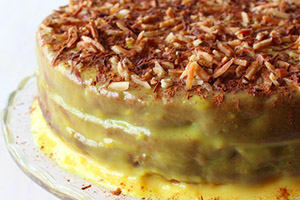

Bolo Ministro

Ingredients
Cake
- 150 ml vegetable oil
- 200 ml milk
- 300 g sugar
- 300 g self-rising flour
- 60 g cinnamon
- 80 g chocolate powder
Syrup
- 150 g sugar
- 2 cinnamon sticks
- 300 ml water
Filling
- 1 lemon peel
- 1 l milk
- 1 cinnamon stick
- 200 g sugar
- 6 egg yolks
- 80 corbflour
- cinnamon (for sprinkling)
Instructions
For the Cake
- Preheat the oven to 180 º C.
- Whisk the sugar and the eggs
- Add the remaining ingredients mix them well.
- Bake in a greased round shape for about 45 minutes.
- Let the cake cool, trim it all around and cut it in half, separating the halves with the inside up.
For the Syrup
- Bring all the ingredients to a boil and simmer about 3 minutes, until the syrup flows into wide strips when you dip a spoon and lift it.
- Use a fork to create some holes on the two halves of the cake.
- Spread the Syrup over the two halves.
For the Filling
- Mix all the ingredients except the lemon peel and cinnamon stick.
- Add the lemon and cinnamon to the mix and let it boil at a moderate temperature.
- Remove the lemon peel and cinnamon stick, pour the cream into a large dish and let it cool.
- Spread it in the base and top of the cake.
- Put the two halves back together and spread the rest of the filling on top and around the cake.
- Sprinkle with the cinnamon powder